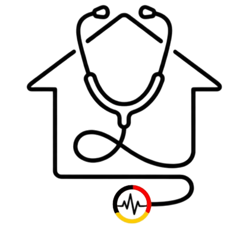

PFLEGE-WG
Prophylaxen-Reihe · Folge 3
Pneumonieprophylaxe
Lungenentzündung vorbeugen
Grundlagen
Pneumonie
Pneumonie = Lungenentzündung
Entzündung des Lungengewebes
meist durch
Bakterien
oder
Viren
Risiko
Besonders gefährdet
Bettlägerige
Ältere
Immungeschwächte
Risikofaktoren
Bettlägerigkeit
Hohes Alter
COPD
Rauchen
Schmerzen nach OPs
→ flache Atmung
Schluckstörungen
Zu wenig trinken
Verwandtes Thema
Atelektase
Definition
Luftleerer Lungenbezirk
nimmt nicht mehr am Gasaustausch teil
Entstehung
angeboren
Operationen
Bettlägerigkeit
Schonatmung
Pneumonieprophylaxe
+
Atelektasenprophylaxe
laufen meist zusammen
Die Maßnahmen ähneln sich
luftleer – kein Gasaustausch
… schläft ein
Ziele
Die Ziele
Lunge gut belüften
Sekret lösen und abhusten
Infektionen vorbeugen
Sauerstoffversorgung sichern
Maßnahmen
Die Basics
Regelmäßige Mobilisation
Oberkörper hochlagern
Ausreichend trinken
Mundpflege
Zum tiefen Durchatmen und Abhusten anleiten
Speziellere Techniken, die jeder Azubi kennen sollte
Spezielle Technik
Atemstimulierende Einreibung (ASE)
Einreibung am Rücken
Lotion in den Händen anwärmen
unparfümiert
Patient sitzt möglichst aufrecht
stützt sich z. B. auf ein Kissen
Hände auf die Schultern
Kreisbewegungen nach unten
Im Rhythmus der Atmung
Ausatmung · leichter Druck links und rechts der Wirbelsäule, Kreis nach außen
Einatmung · Druck loslassen, Kreis Richtung Wirbelsäule schließen
5–8 × über den ganzen Rücken
Am Ende: vom Nacken bis zum Steißbein ausstreichen
ASE
Was bringt das?
Vertieft die Atmung
Wirkt beruhigend
Fördert die Körperwahrnehmung
gerade bei verwirrten oder bewusstseinsgestörten Patienten
Auch bei bewusstlosen Patienten: vorher ansagen, was man macht
Hören kann trotzdem noch funktionieren
Atemtraining
Mit speziellen Geräten
SMI-Trainer
Sustained Maximal Inspiration
Tief einatmen → der Ball steigt in der Kammer hoch
PEP-Geräte · für die Ausatmung
Eine Kugel erzeugt Widerstand beim Ausatmen
hilft, Sekret zu lösen
Dauer
Etwa 10 Minuten
mit kurzen Pausen
Sonst droht Hyperventilation
wenn der Patient zu schnell atmet
SMI-Trainer
PEP
Ohne teures Gerät
Blubberflasche
Über einen Schlauch in eine halb gefüllte Wasserflasche pusten
erhöht den Ausatemwiderstand
die Lunge entfaltet sich
Simpel – fast überall improvisieren
Maßnahmen
Zum Schluss noch
Rauchverzicht fördern
Bei Sauerstofftherapie auf Nasenpflege achten
trockene Luft reizt die Schleimhaut
Fallbeispiel
Ein Patient nach Bauch-OP
Fallbeispiel
Atelektasen- und Pneumonierisiko
Situation
nach Bauch-OP · hat Schmerzen
Atmung
ganz flach – wegen Schmerzen nach OP
Bewegung
kaum im Bett
Schmerzmanagement sicherstellen
damit er tiefer atmen kann
Oberkörper hochlagern
Zum Atemtraining anleiten
vielleicht mit dem SMI-Trainer
Zur Mobilisation ermutigen
so früh wie möglich
ASE anbieten
wirkt außerdem beruhigend
Zusammenfassung
Kurz zusammengefasst
Pneumonie
Lungenentzündung
Atelektase
Luftleerer Lungenbezirk
Beide hängen oft zusammen · Prophylaxe läuft ähnlich
Wichtigste Maßnahmen
Mobilisation
Atemübungen
Atemstimulierende Einreibung
Atemtrainer wie SMI oder PEP
Blubberflasche
bei Bedarf, als einfache Alternative
Bei allem gilt
„Auf flache Atmung achten und frühzeitig gegensteuern.“
PFLEGE-WG
Abonniert uns gern
Schreibt's in die Kommentare
Bis zum nächsten Mal bei Pflege-WG

PFLEGE-WG